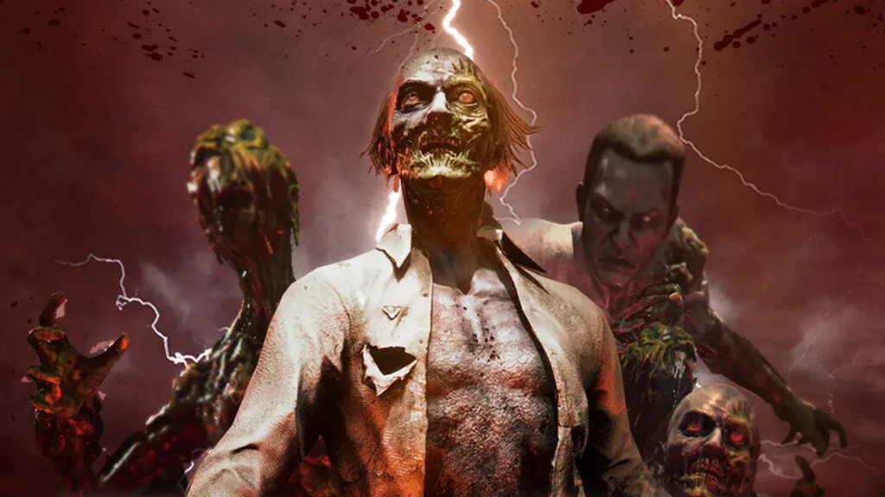

Sony vendió 43 patentes relacionadas con tecnología de realidad virtual a Meta, según registros de la Oficina de Patentes y Marcas de Estados Unidos detectados recientemente. La operación forma parte de un acuerdo firmado en diciembre de 2025 que contempla la transferencia de más de 400 patentes a nivel mundial, incluyendo registros de Estados Unidos, Japón, China, Corea del Sur y Europa.
El dato resulta especialmente llamativo porque Meta es actualmente uno de los principales actores del mercado de realidad virtual gracias a sus dispositivos Quest. Sony, por su parte, intentó consolidar su propia presencia en este segmento con PlayStation VR2, lanzado en febrero de 2023 como sucesor del dispositivo original de PlayStation 4.
La transferencia, sin embargo, no significa que PlayStation VR2 haya sido oficialmente abandonado. De hecho, el dispositivo continúa comercializándose y es compatible con PC mediante un adaptador. Lo que sí hace la operación es alimentar las dudas sobre cuánto está dispuesta Sony a invertir en futuros proyectos de realidad virtual.
Una apuesta que nunca terminó de despegar
PlayStation VR2 recibió buenas críticas por sus avances técnicos respecto de su antecesor, pero tuvo que enfrentarse a varios obstáculos. Su precio inicial de 549,99 dólares, la ausencia de retrocompatibilidad con los juegos del primer PlayStation VR y el limitado apoyo de la industria fueron algunos de los factores que complicaron su llegada al público.
La situación también quedó reflejada en el catálogo propio de Sony. El lanzamiento de PS VR2 estuvo acompañado por Horizon Call of the Mountain, pero la compañía publicó solamente dos juegos originales propios para el dispositivo, siendo el otro Firewall Ultra. Eso marcó una diferencia importante respecto de la estrategia habitual de PlayStation con sus consolas tradicionales.
En 2024, además, Sony redujo considerablemente el precio del visor y posteriormente añadió compatibilidad con PC. En aquel momento, el movimiento ya había sido interpretado como una señal de que PlayStation VR2 no estaba ocupando un lugar prioritario dentro de la estrategia de la compañía.
¿El final de PlayStation VR?
La venta de las patentes no permite afirmar que Sony haya decidido abandonar definitivamente la realidad virtual. La compañía había defendido públicamente la importancia del sector y, hasta ahora, no anunció el cierre de PlayStation VR2 ni descartó desarrollar nuevo hardware.
Sin embargo, la transferencia de cientos de patentes a Meta resulta difícil de ignorar. Si Sony pretendiera ampliar agresivamente su presencia en realidad virtual durante los próximos años, conservar una cartera tan importante de propiedad intelectual propia tendría un valor estratégico considerable.
Por ahora, la situación parece más compatible con una reducción de prioridades que con un abandono confirmado. Pero si Sony no presenta nuevos proyectos de realidad virtual en los próximos años, esta transferencia podría terminar siendo recordada como uno de los primeros indicios de que PlayStation VR dejó de ser una apuesta central para la compañía.
Naughty Dog estaría trabajando en un nuevo Uncharted que podría recuperar a Nathan Drake
Un nuevo reporte asegura que Naughty Dog estaría desarrollando un nuevo episodio de Uncharted, que sería el próximo gran proyecto del estudio después de Intergalactic: The Heretic Prophet. La información apunta a la posible participación de Nathan Drake y su hija Cassie, aunque Sony todavía no anunció oficialmente el juego.

1 de octubre de 2026House of the Dead vuelve a los arcades con una experiencia de realidad virtual
SEGA Amusements anticipó un nuevo proyecto de The House of the Dead para arcades que utilizará tecnología de realidad virtual. El título, aparentemente llamado House of the Dead: Reawakened, tendrá un gabinete inspirado en una mansión gótica y será presentado públicamente durante la IAAPA Expo de noviembre.
 30 de septiembre de 2026
30 de septiembre de 2026
Shuhei Yoshida cree que Sony y Nintendo deberían mantener la generación actual durante más tiempo
El exdirectivo de PlayStation, Shuhei Yoshida, habló sobre el futuro del hardware y consideró que Sony y Nintendo podrían prolongar la vida de PS5 y Switch 2. Su argumento está relacionado con el aumento del precio de los componentes y con la percepción de que muchos jugadores todavía están satisfechos con el hardware actual.
Cargando comentarios…